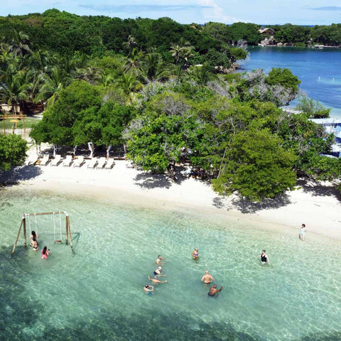

islas del Rosario es un pequeño archipiélago formado por unas 28 islas, que es parte de la zona insular de Cartagena de Indias, con una superficie terrestre de 20 hectáreas ubicado frente a las costas del Departamento de Bolívar, a la misma latitud que la península de Barú
